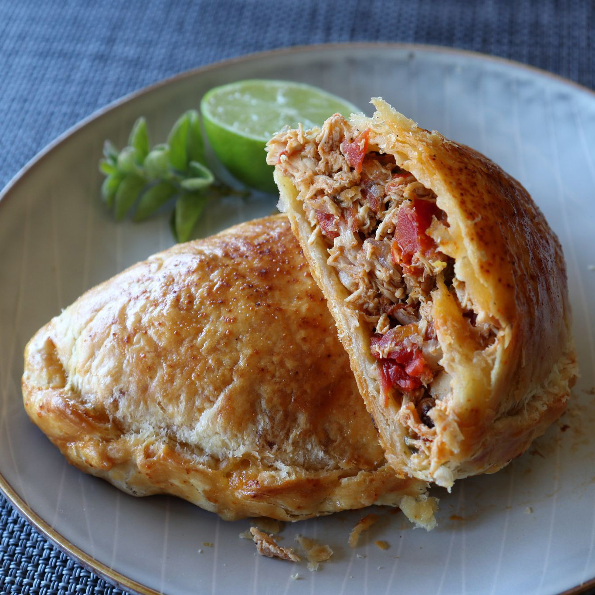

Chicken Empanadas Recipe

Chicken Empanada is a type of pastry that is stuffed with chicken meat, potato, carrots, and sweet peas. This is made by arranging the filling in the middle of a flattened dough and sealing it by pinching and folding the edges. Similar types of Empanadas are also common in Spain and South America. In fact, the Cuban Picadillo almost resembles the Filipino Empanada in terms of ingredients and taste
Ingredients
- 2 tablespoons olive oil
- 1 yellow onion, sliced
- 1/2 cup diced poblano pepper
- 4 cloves garlic, chopped
- 1 teaspoon kosher salt
- 1/2 teaspoon freshly ground black pepper
- 1 1/2 teaspoons ground dried chipotle pepper
- 1/2 teaspoons ground cumin
- 1/4 teaspoon dried Mexican oregano
- 1 pinch cayenne pepper, or taste
- 3 cups diced cooked chicken
- 2 (10 ounce) cans diced tomatoes with green chile peppers (such as RO*TEL)
- 1/3 cup water
- 3/4 cup grated pepper Jack cheese(Optional)
- 1 large egg, beaten
- 2 teaspoons water
- 2 tablespoons dried currants
For the Dough
- 3 cups all-purpose flour
- 1 1/2 teaspoons kosher salt
- 1 teaspoon white sugar
- 12 tablespoons cold unsalted butter
- 1 large egg, beaten
- 1/3 cup cold water, or as needed